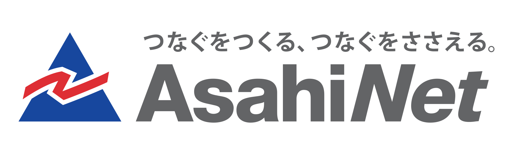
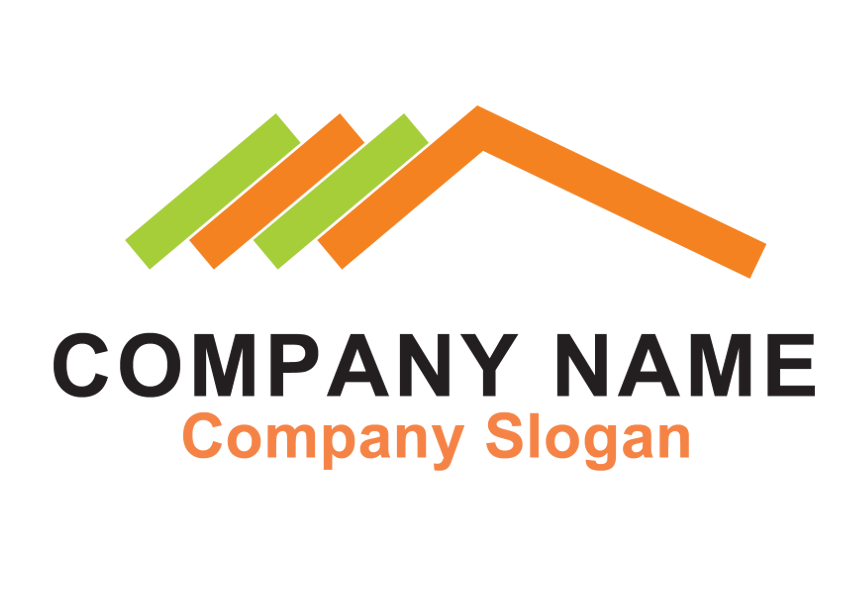
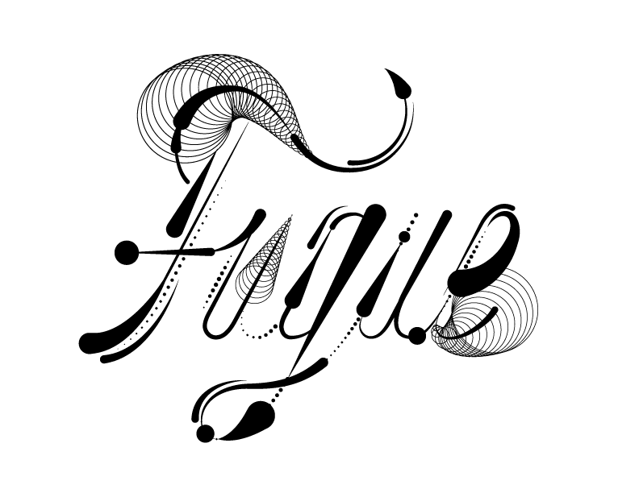

Introduction🔗
The Summer of Haskell is an effort by haskell.org to reach out to students and encourage them to contribute to the Haskell community with the aid of experienced mentors.
This program is open to college students, 18 or older, in most countries.
The general structure of our program is set up to mirror the Google Summer of Code.
Participation in the Summer of Haskell represents a similar level of commitment to taking a job or internship for the summer in terms of time investment. The compensation for accepted student projects is 5500 USD, to be paid in two lump sums, half at the beginning of the summer, and half upon receiving a passing midterm evaluation. As with the Google Summer Of Code, participation in the Summer of Haskell is not an internship or employment but simply an activity that the student performs as an independent developer for which he/she is paid a stipend.
Timeline🔗
This timeline is not yet final.
| April 25th | The student application period begins |
| May 6th | The student application period ends |
| May 20th | Student applications are sifted through by mentors |
| May 22nd | Accepted students are announced |
| May 22nd | Community bonding period begins |
| June 13th | Students begin work, initial payment is made |
| July 18st | Midterm evaluations begin |
| July 22th | Midterm evaluations are due from both students and mentors |
| July 25th | Second payment is made to students passing the midterm evaluation |
| September 2nd | End of work period |
| September 5th | Final evaluations begin |
| September 9th | Final evaluations are due from both student and mentors |
| September 12th | Final results announced |
Sponsors🔗
  
haskell.org kicked things off this year by funding a student and organizing the Summer of Haskell 2017 after a successful Summer of Haskell 2016.
Asahi Net is a Japanese Internet service provider that has been running stable systems for over 25 years. They are a proud sponsor of the Summer of Haskell, and contribute to the Japanese Haskell community.
Fugue Inc. radically simplifies cloud operations with its software-defined system for dynamically orchestrating and enforcing cloud infrastructure at scale. Fugue uses Haskell in its product and is proud to sponsor a student to improve the ecosystem.
Davean has volunteered to fund a student expressly to work on the Hadrian build system for GHC.
Chris Smith has volunteered to fund two students to work on CodeWorld in particular.